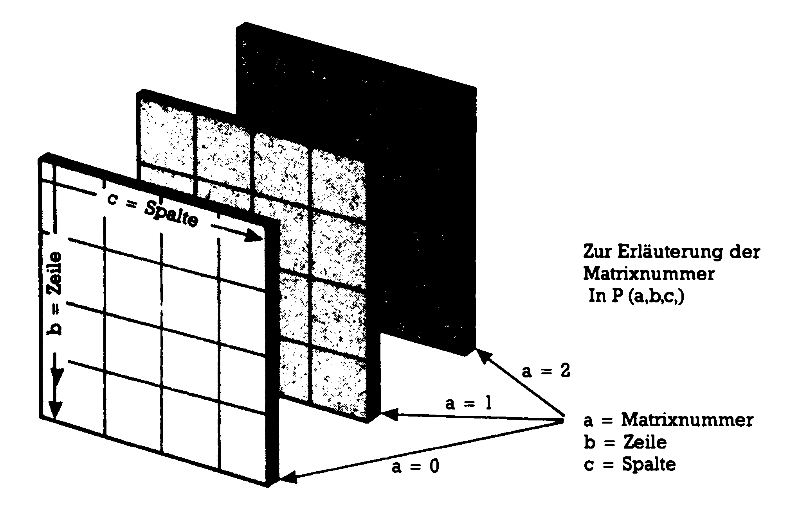
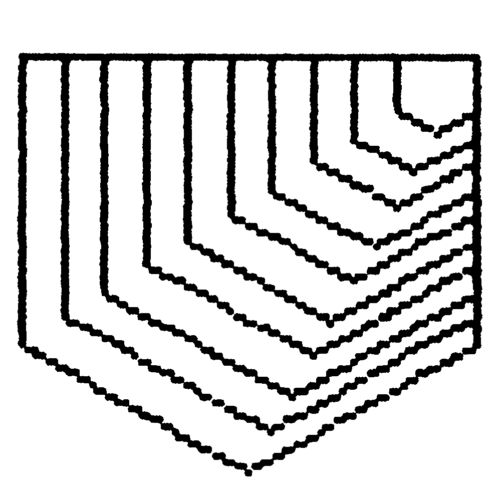
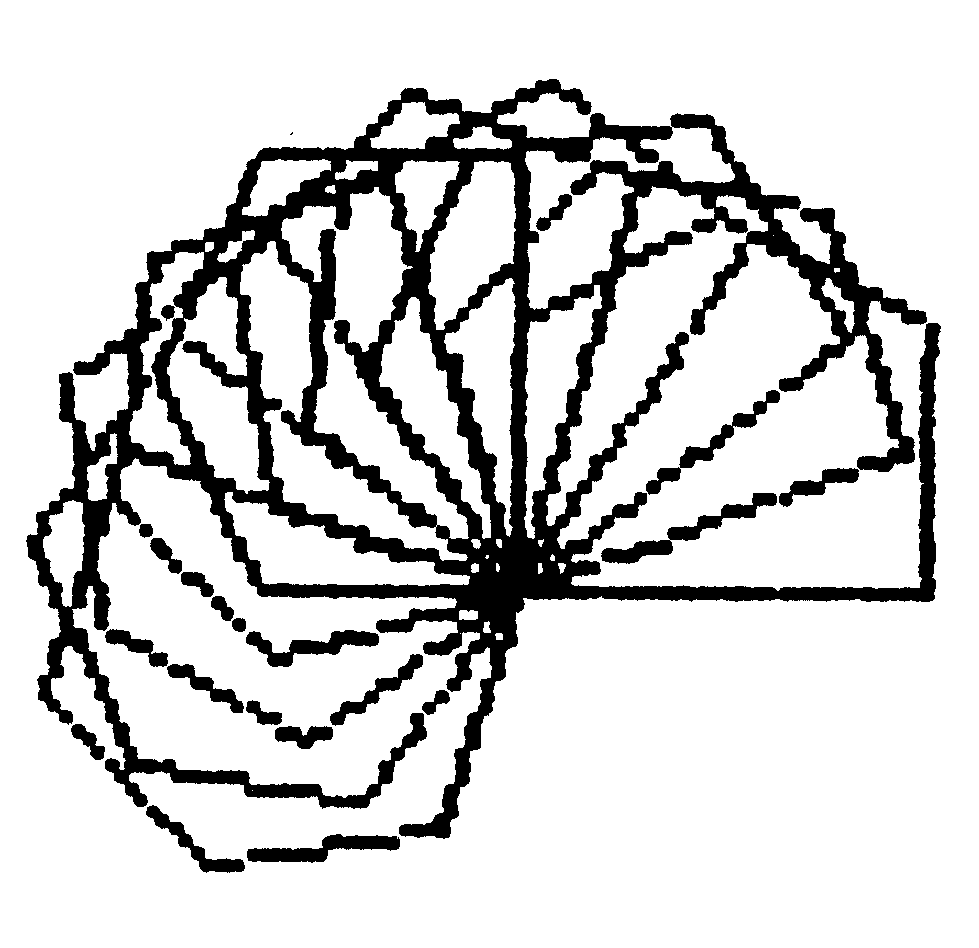
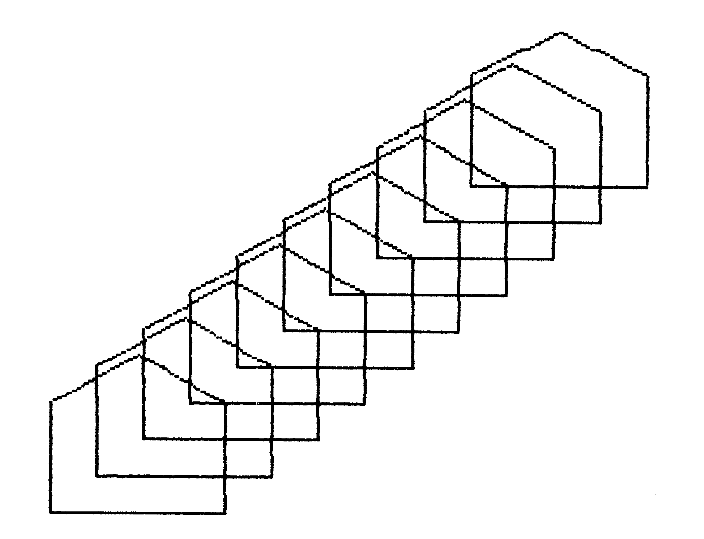
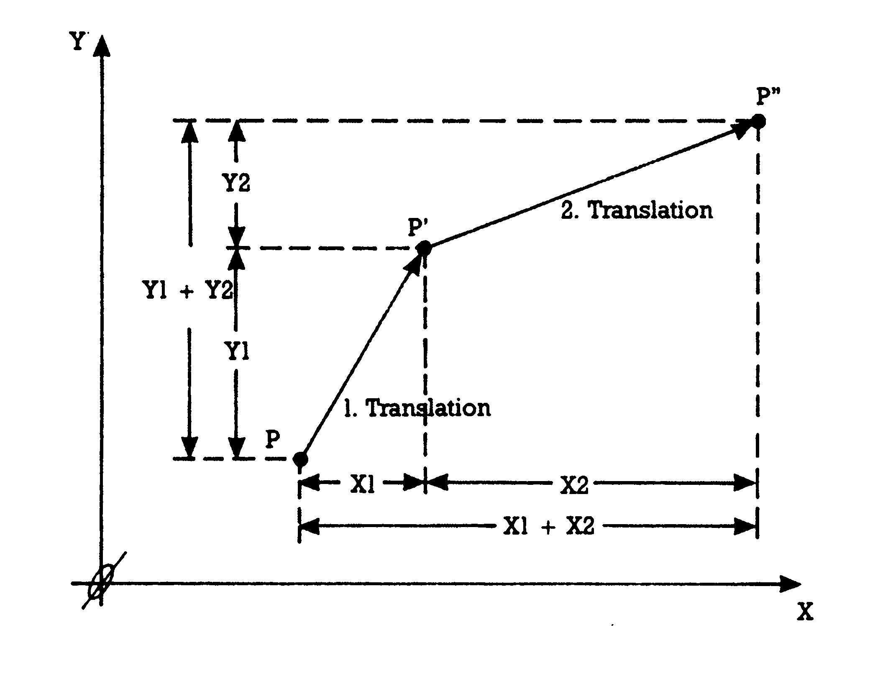
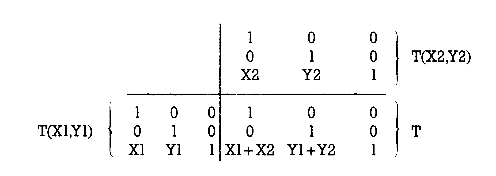
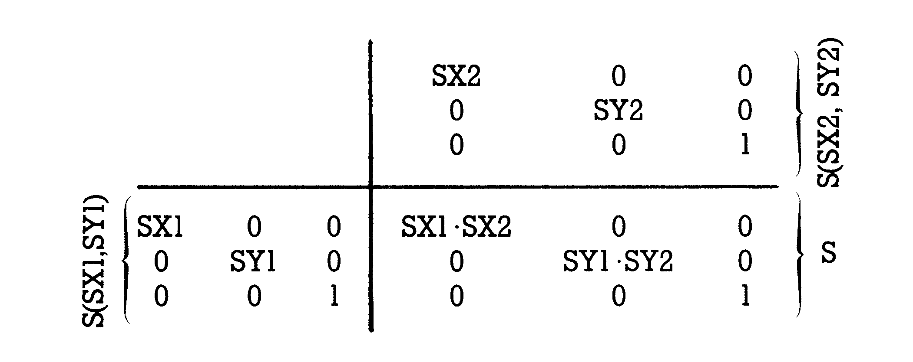
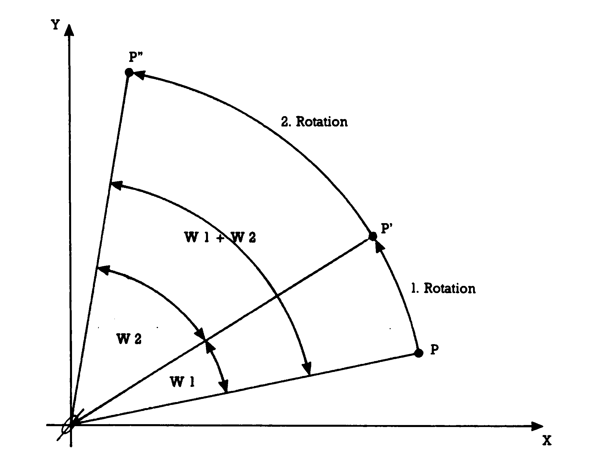
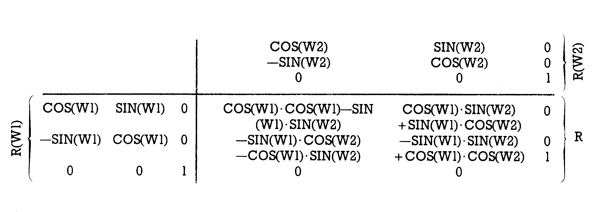

Streifzüge durch die Grafikwelt (Teil 6)
Transformationen sind die Basis von Computergrafik. Nachdem Sie die Matrizenrechnung und die Transformationen kennengelernt haben, danach dann die ersten Transformationen, soll nun systematisch an die verschiedenen Transformationen herangegangen werden, die Computergrafik möglich machen.
ir befassen unsin dieser Serie mit Themen, die vielleicht zunächst einmal unbekannt und schwer überschaubar wirken. Deshalb lehnen wir uns zunächst einmal zurück und rekapitulieren, was wir in der letzten Folge erreicht haben. Voraussetzung für die Fortschritte jener Folge war die Matrizenrechnung, die in der Ausgabe 5/86 vorgestellt wurde. Wirhaben dann festgestellt, daß man auch Punkte als Matrizen auffassen kann und Transformationen als Multiplikation solcher Punktmatrizen mit speziellen Transformationsmatrizen. Für die 3 grundlegenden Arten der 2D-Transformationen (Skalierung, Rotation und Translation) fanden wir jeweils spezielle Transformationsmatrizen S, R una TT.
Auf dieser Basis und miteinem kleinen Vorgriff in die 3D-Transformationen entwickelten wir schließlich die Matrix M, die es unserlaubt, ein beliebiges Weltkoordinatensystem auf den Bildschirm zu bringen. Die X-Achse zeigt dann nach rechts, die Y-Achse nach oben. Diese Matrix M werden wir in allen Programmen so lange benutzen, bis wir über Optimierung von Transformationen gesprochen haben. Gleichzeitig werden wir zur Übersetzung von allgemeinen Grafikbefehlen in spezielle Systeme (C 64 mit HIRES-3, Plotter 1520, Basic 7.0 des C 128) etwas von der Tabelle abweichen. Das liegt daran, daß in diese Tabelle schon die optimierte Form der Matrix M eingearbeitet ist.
Der Grafikstandard
Zur Erinnerung: Weil es wirklich schlimm bestellt ist um die vielen unterschiedlichen Basic-Versionen und ihre Grafik-Befehle, wird in dieser Serie eine Anzahl künstlicher grundlegender Grafik-Befehle verwendet, die keinem Standard-Basic entsprechen. Das hat einen Nachteil und allerlei Vorteile: Als nachteilig empfindet der eilige Anwender, daß die abgedruckten Programme nicht direkt lauffähig sind, sondern daß einige Befehle erst noch in den gerade benutzten Basic-Dialekt übersetzt werden müssen. Von Vorteil ist aber, daß nahezu jedes System diese Programme verwenden kann. Gleichgültig, ob Sie einen C 128 oder einen Atari vor sich stehen haben: Wenn Sie die zehn Grafikbefehle unseres Standards in Ihr Basic übersetzt haben, dann läuft das Programm auch bei Ihnen. Eine Hilfe ist die Übersetzungstabelle (Tabelle 1), die folgende Übersetzungen liefert: C 64 mit HIRES-3, Commodore-Computer mit Plotter 1520, Basic 7.0 desC 128 und Basic 3.5 des C 16. \
| C 64 mit HIRES-3 | |
|---|---|
| Befehl | Übersetzung |
| INIT | POKE 53280,0:SYS 37498:HFL,6,12 |
| START | TRS,0,320,0,200 |
| MITTE | TRS,-160,160,-100,100 |
| PUNKT(X,Y) | TPK,X,Y |
| LINE(XA,YA,XB,YB) | TLN,XA,YA,XB,YB |
| KREIS(XM,YM,RX,RY) | TKR,XM,YM,RX,RY,2*Pi |
| TEXT(A$,XT,YT) | TEX,A$,YT,XT |
| SHOW | HAN |
| NORMAL | HOF |
| GRESET | LOE:AUS |
| Commodore-Computer mit Plotter 1520 | |
| Befehl | Übersetzung |
| INIT | OPEN1,6,1:OPEN2,6,2:PRINT #2,0: CLOSE2 |
| START PRINT | #1,"M",0,-200:PRINT #1,"I" |
| MITTE PRINT | #1,"R",240,0:PRINT #1,"I" |
| PUNKT(X,,Y) | PRINT #1,"R",X,Y:PRINT #1,"J",X- +2,Y+2:PRINT #1,"R",X,Y |
| LINE(XA,YA,XB,YB) | PRINT #1,"R",XA,YA:PRINT #1, "J",XB,YB |
| KREIS(XM,YM,RX,RY) | Hier ist ein kleines Programm nötig: M=50:D=360*π/(M*180): DIMT(M):T(0)=2*π FOR I=1 TO M T(I)=T(I-1)+D PRINT #1,"R",RX* COS(T(I-1))+XM,RY*SIN(T(I-1))+YM PRINT #1,"J",RX*COS(T(I))+XM, RY*SIN(T(I))+YM NEXT I |
| TEXT(A$,XT,YT) | OPEN4,6:PRINT #1,"R",XT,YT: PRINT #4,A$:CLOSE4: PRINT #1, "M",240,-YT:PRINT #1,"I" |
| SHOW | PRINT #1,"R",0,-200 |
| NORMAL | CLOSE1 |
| GRESET | OPEN7,6,7:PRINT #7:CLOSE7 |
| Basic 7.0 des C 128 und Basic 3.5 des C 16 |
|
| Befehl | Übersetzung |
| INIT | COLOR0,16:COLOR1,7:COLOR4,1: GRAPHIC1,1 |
| START | XU=0:XO=319:YU=0:YO=199 (bezogen auf UP Transformation) |
| MITTE | XU=-160:XO=160:YU=-100:YO=100 (bezogen auf UP Transformation) |
| PUNKT(X,Y) | GOSUB 1020:DRAW1,XX,YY (UP Transformation beginnt bei 1020) |
| LINE(XA,YA,XB,YB) | X=XA:Y=YA:GOSUB 1020:X1=XX: Y1=YY X=XB:Y=YB:GOSUB 1020: X2=XX:Y2=YY DRAW1,X1,Y1 TO X2,Y2 (UP Transformation beginnt bei 1020) |
| KREIS(XM,YM,RX,RY) | X=XM:Y=YM:GOSUB 1020:X5=XX: Y5=YY RX=RX*319/(XO-XU):RY= RY*199/(YO-YU) CIRCLE1,X5,Y5,RX,RY (UP Transformation beginnt bei 1020) |
| TEXT(A$,XT,YT) | CHAR1,XT,YT,A$ |
| SHOW | GRAPHIC1 |
| NORMAL | GRAPHIC0 |
| GRESET | SCNCLR1 |
Einfache 2D-Transformationen
Zunächst sollen uns die einfachen Transformationen von Punkten (OD) in der Ebene (2D) beschäftigen. Wir benutzen zur Illustration wieder die Eckpunkte eines einfachen Hauses. In der letzten Folge hatten wir die drei Formen einer einfachen Transformation in der Ebene kennengelernt: Die Skalierung und die dazugehörige Skalierungsmatrix S, die Rotation und die damit verbundene Rotationsmatrix R sowie schließlich die Translation und die Translationsmatrix T. Im Verlauf der Entwicklung von M gingen die Anwendungen dieser Erkenntnisse etwas unter, weshalb wir nun darauf kurz eingehen werden.
Zu diesem Zweck werden Ihnen nachfolgend drei Programme vorgestellt, die modular aufgebaut sind. Vier Module spielen jeweils eine Rolle: In TR MODI (Zeilen 10 bis 110) werden alle Vorbereitungen getroffen. Die Eckpunkte des Hausumrisses gelangen in die 6,3-Matrix P(0,...), die in der letzten Folge erarbeitete Matrix M wird als 3,3-Matrix M(l....) erzeugt und alle Variablen und Arrays werden festgelegt. Ein weiteres Modul bildet das Unterprogramm UP MATRIMULT (Zeilen 500 bis 590, Einsprungzeile 550). Dieses Modul ist nichts anderes als der Kern des Programmes MATRIMULT aus der vorletzten Folge, der einem Leservorschlag folgend etwas verbessert wurde. Das Unterprogramm multipliziert die 6,3-Punktmatrizen P mit den jeweiligen 3,3-TransformationsmatrizenM. PundM sind jeweils in drei Dimensionen definiert. Die erste Dimension ist aber lediglich eine Kennummer, die verschiedene Matrizen P oder Mbezeichnet. Eine Illustration der Zuordnungen sehen Sie in Bild 1. In P(a,b;c) ist also a die Matrixnummer, b die Nummer der Zeile und c die der Spalte. Als a können die Inhalte der Variablen A und B verwendet werden, wobei B immer die Nummer der Faktormatrix P enthält und A die Nummer der Ergebnismatrix P Auch für die jeweilige Transformationsmatrix M gibt es diese Möglichkeit. Hier nimmt a den Wert der Variablen Dan, wobei in TR MODI unsere alte Matrix M in M(l....) definiert liegt, also D=1 festgelegt wurde.

Während diese beiden Module in allen drei Programmen nahezu unverändert bleiben, ist das Modul »UP Z« der Grafikteil, der sich dem jeweiligen System anpaßt. Wir haben also 4 verschiedene UP Z: UP Z (ALLG) UP Z (128)
UP Z (1520) UP Z (HIRES)
In diesen Unterprogrammen sind alle notwendigen Grafik-Befehle des Programmes enthalten: Grafik einschalten und ausschalten, sowie das Zeichnen der Linien. Alle UP Z reichen von Zeile 600 bis 680. Die Einsprungpunkte sind folgende: Zeichnen des Hauses nach den Werten in der Punktmatrix ab Zeile 630; Grafik einschalten ab Zeile 655, Grafik ausschalten ab Zeile 670.
Durch diese Einheitlichkeit ist es möglich, das letzte hier vorzustellende Programm-Modul für alle Systeme gleich zu schreiben. Dieses Modul belegt die Zeilen 200 bis 285 und vollzieht die folgenden Aufgaben: Für die jeweils angesteuerte Aufgabe erstellt es zunächst die Transformationsmatrix M(0...). Dann schaltet es die Grafik ein und mündet in eine Schleife, welche die der Aufgabe gemäßen Parameter variiert. Auf diese Weise werden immer einzelne Elemente der aktuellen Transformationsmatrix M(0,...) geändert. Nun folgen zwei Matrix-Multiplikationen: Zuerst wird die Punktmatrix P(0,...), die die Ausgangskoordinaten aller Eckpunkte des Hauses in Weltkoordinaten enthält, mit der Transformationsmatrix M(0,...) multipliziert und das Ergebnis (das sind dann die transformierten Punkte in Weltkoordinaten) in P(l....) abgelegt. Danach erfolgt die Bildschirmanpassung mittels Multiplikation mit unserer Matrix M, die hier nunM(I....) heißt. Die Ergebnisse (also die Bildschirmkoordinaten der transformierten Eckpunkte unseres Hauses) legen wir in P(2,...) ab. Alsletztes Glied in der Schleife folgt dann der Unterprogrammsprung zum Zeichnen des so errechneten Hauses. Ein Befehl zum Abschalten der Grafik (das ist das GOSUB 670) und schließlich END beenden dieses Modul. Nun sollen aber endlich die Aufgaben und ihre Lösungen vorgestellt werden.
Skalieren
Als erste Aufgabe stellen wir uns das Problem des Verkleinerns oder Vergrößerns von Bildern. Aus der letzten Folge wissen Sie, daß man das durch Skalieren lösen kann. Eine Skalierungs-Matrix hatten wir kennengelernt. Ihre allgemeine Form ist die 3,3-Matrix in Bild 2: Wir belegen also eine Matrix M(0,...) mit den gewünschten Anfangswerten SX und SY (im Programm habe ich dazu O.l verwendet) und müssen nun in einer Schleife sukzessive die Elemente M(0,1,1) und M(0,2,2) für eine Vergrößerung erhöhen oder für eine Verkleinerung der Abbildung erniedrigen. Im Programm wurde die Vergrößerung gewählt. In Bild 3 sehen Sie das Ergebnis unserer Bemühungen. Die Aufgabe der Skalierung wurde dabei durch das Programm-Modul SKALTRANS erfüllt (Zeilen 200 bis 285). Die Zeile 255 übernimmt die Vergrößerung der beiden Matrixelemente.

Eine Bitte an Sie: Haben Sie bei der Programmausführung etwas Geduld. Später werden wir uns mit der Optimierung von solchen Grafikprogrammen befassen, aber immer noch verwenden wir die Interpretersprache Basic und benutzen dazu auch noch relativ langsame Hardware. Und noch ein Hinweis: Das Programm ist hier in der allgemeinen Version abgedruckt. Um es auf Ihrem System lauffähig zumachen, müssen Sie nur das UP Z (ALLG) gegen Ihr UP Z austauschen.
Wenn wir nun an die nächste Aufgabe herangehen, werden Sie den Vorzug des modularen Aufbaues kennenlernen: Es muß nämlich lediglich das Mo- dul SKALTRANS ausgetauscht werden, also die Zeilen 200 bis 285 gegen dasneue Modul ROTTRANS.
Rotationen
Das neue Modul heißt ROTTRANS. Die Aufgabe besteht hier in der sukzessiven Verdrehung des Hauses in der XY-Ebene. Man löst solch eine Aufgabe mittels der Rotationsmatrix R, die wir in der letzten Folge kennengelernt haben. Bild 4 ruft uns diese Matrix wieder ins Gedächtnis zurück. Wie wir die Aufgabe lösen sehen Sie aus dem Modul ROTTRANS.
Wie Sie sich entsinnen werden, bezeichnet w den Winkel der Drehung. Wir müssen die Elemente M(0,1D, M(0,12), M(0,2,1) und M(0,2,2) verändern, die jeweils den Sinus oder Cosinus des variierten Winkels enthalten. Wir fangen beim Winkel w=0anund weil der Sinus von 0 ebenfalls 0 ist, der Cosinus aber 1, braucht man in Zeile 235 lediglich drei Elemente mit dem Ausgangswert | zu belegen. Die Schleife ab Zeile 250 zählt den Winkel (hier heißt er L) von O bis za in Schritten von /10. In der Zeile 255 werden die vier Elemente der Rotationsmatrix jeweils neu berechnet und in M(0....) eingetragen.
Bis auf zwei Änderungen bleibt der Rest des Programmes erhalten. Diese beiden Neuerungen betreffen eine Verschiebung des Koordinatenursprunges in die Bildmitte, damit Platz genug zum Drehen des Hauses vorhanden ist. In Zeile 15 steht für die Größen XU,XO etc. nun: XU = -64:XO = 64 YU = -40:YO = 40
Außerdem muß die Matrix M(l....) in drei Elementen verändert werden. Deshalb lautet die Zeile 110 nun:
110 M(1,3,2) = 100:M(1,3,1) = 160
Wenn Sie sich das Zustandekommen unserer Matrix M aus der letzten Folge ansehen, dann erkennen Sie, daß die erste Änderung eine Verkleinerung, die zweite eine Verschiebung bewirkt hat. Sie können aber auch einfach weiter arbeiten, ohne zunächst diese beiden Eingriffe zu verstehen. Wenn wir über kombinierte Transformationen sprechen, wird Ihnen die Vorgehensweise klar werden. Das Ergebnis des Programmes ROTTRANS sehen Sie in Bild 5.

Translationen
Die dritte Aufgabe betrifft Verschiebungen (Translationen) in der Ebene. Wie Sie sicher noch aus der letzten Folge erinnern, hatten wir dazu eine Matrix T entwickelt, in der das Element T@,) TX genannt wurde und den Betrag bezeichnete, um den ein Punkt in der X-Richtung verschoben wurde. Der Y-Betrag tauchte als TY im Element T(3,2) auf. Bild 6 zeigt Ihnen die Translationsmatrix.
Wieder können wir unser Programm verwenden, lediglich das Modul in den Zeilen 200 bis 285 heißt nun TRANSLAT.
In der Schleife ab Zeile 250 lassen wir uns zehn Häuser zeichnen, die jedesmal um vier Einheiten in der X-Richtung und um drei in der Y-Richtung verschoben werden. Das geschieht in der Zeile 255. Damit das erste Haus trotzdem unten links steht, wurden M(0,3,1) und M(0,3,2) in Zeile 235 mit negativen Werten vorbelegt, die im ersten Schleifendurchlauf zu den Werten 0 führen. In Bild 7 sehen Sie das Ergebnis des Programmablaufes mit TRANSLAT. °

Sie kennen nun die drei einfachen Transformationen in der Ebene und können auf der Basis unserer Beispielprogramme schnell und einfach eigene Probleme lösen. Eines werden Sie aber sehr schnell bemerken: Nur selten hat man solch eine einfache Transformation vorliegen. Meistens muß man sich mit Kombinationen der verschiedensten Art herumschlagen. Deshalb wenden wir uns nun den zusammengesetzten Transformationen zu.
Zusammengesetzte Transformationen
Sie können sich sicher vorstellen, daß man hier leicht ins uferlose geraten kann, obwohl wir es nur mit drei Typen der Transformation und der Ebene zu tun haben. Wir werden uns nur die wichtigsten herauspicken und auf diese Weise klären, wieman Kombinationen behandelt. Auf diese Weise erkennen Sie das Prinzip, nach dem man zur Problemlösung vorgehen kann und können es auf Ihre eigenen Aufgaben anwenden. Fangen wir mit dem einfachsten an, nämlich mehreren gleichartigen Transformationen.
Mehrere Translationen
Nehmen wir einmal an, ein Punkt Pwerde durch eine Translation (mit Hilfe der Matrix T, die wir durch ihre beiden wichtigen Elemente x] und yl kennzeichnen: T(xl,yl)) zum Punkt P'. Dieser Punkt P' seinerseits aber erfahre wiederum eine Translation durch eine weitere Transformation miteiner Translationsmatrix T(x2,y2). Der dadurch endgültig erreichte Punkt hieße nun P'. Bild 8 soll die Verhältnisse illustrieren. Wir haben gelernt, daß man schreiben kann: P'=PxT«ly)) und

P'"= P'x T(x2y2)
Setzt man in der zweiten Gleichung anstelle von P" die rechte Seite der ersten Gleichung ein, dann ergibt sich:
P' = Px T(xlyl) x T(x2,y2) = Px (TxlyD)xT(x2,y2))
Statt also zuerst P mit der Matrix T(xlyl) malzunehmen und das Ergebnis davon (P') dann weiter mit der Matrix T(x2,y2) zu multiplizieren um so P' zu erhalten, kann man auch P multiplizieren mit dem Produkt beider Translationsmatrizen. Nennen wir dieses Produkt einfach T: T = T&lyl) x T(x2,y2) dann kann man einfach schreiben:
P'=PxT
Berechnen wir nun einmalT. In Bild 9 sehen Sie diese Berechnung, die wir in der vorletzten Folge erlernt haben. Es ergibt sich für T (siehe Bild 10).

Dieses Ergebnis beweist es uns: Mehrere aufeinanderfolgende Translationen verhalten sich additiv. Es genügt, die verschiedenen Verschiebungen in X- und in Y-Richtung zusammenzuzählen. In Bild 8 sind zwei aufeinanderfolgende Translationen grafisch dargestellt.
Mehrere Skalierungen
Nach dem gleichen Schema wie eben bei den Translationen können wir auch mehrere Skalierungen zusammenfassen. Nennen wir wieder nach den beiden wichtigen Elementen der Skalierungsmatrix die beiden nacheinander angewendeten Matrizen S(sxlsyl) und S(sx2,sy2), dann kann man als gemeinsame Matrix S schreiben:
S = S(sxl,syl) x S(sx2,sy2)
Für einen Punkt P gilt dann ebenso nach 2 Transformationen:
P'=PxS
In Bild 11 wird diese gemeinsame Matrix S berechnet:

Die kombinierte Matrix S zeigt Ihnen Bild 12.
Wir erkennen aus dieser Kombination, daß mehrere Skalierungen multiplikativ sind. Die einzelnen Skalierungsfaktoren sx und sy müssen also miteinander malgenommen werden.
Mehrere Rotationen
Bild 13 zeigt uns die Verhältnis-se beimehreren aufeinanderfolgenden Rotationen eines Punktes P über P' nach P'. Wieder können die beiden Rotationsmatrizen zur gemeinsamen Rotationsmatrix R verknüpft werden. Bild 14 führt Ihnen die Berechnung vor Augen.


Schon in der letzten Folge hatten wir Gesetze für den Sinus und den Cosinus von Winkelsummen vorgestellt. Damit kommen wir auf eine kombinierte Rotationsmatrix R, die in Bild 15 gezeigt wird.
Daraus folgert, was auch in Bild 13 zu erkennen ist: Mehrere aufeinanderfolgende Rotationen verhalten sich additiv. Man muß also nur die Winkel zusammenzählen, die die Argumente in den jeweiligen einzelnen Rotationsmatrizen bilden, um die Gesamtrotation durchzuführen.
In der Praxis eines Computergrafikers viel bedeutsamer sind zusammengesetzte Transformationen, die beispielsweise die Rotation um einen beliebigen Punkt betreffen oder aber die Skalierung, die auf einen beliebigen Ort der Ebene bezogen wird. Ab der nächsten Folge befassen wir uns mit den Anwendungen dessen, was wir bisher gelernt haben. Da das ein anderes Gebiet ist, enden die »Streifzüge« mit dieser Folge.
(H. Ponnath/og)